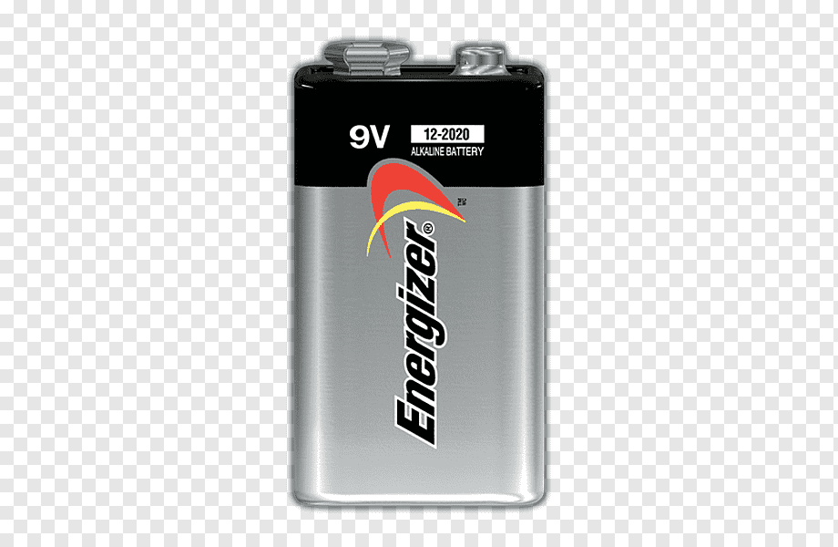
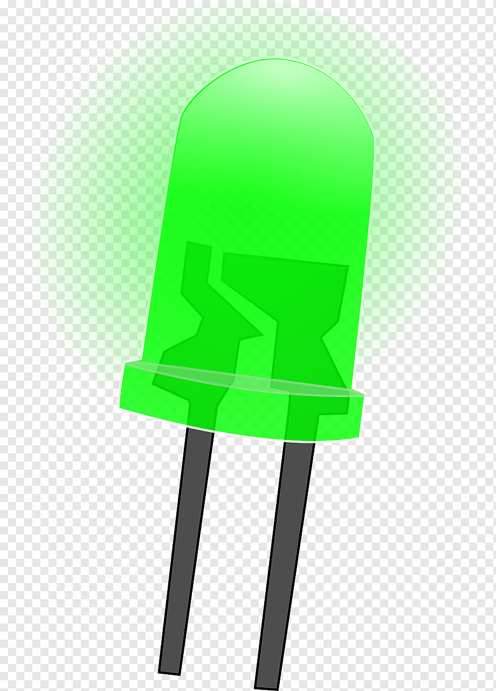
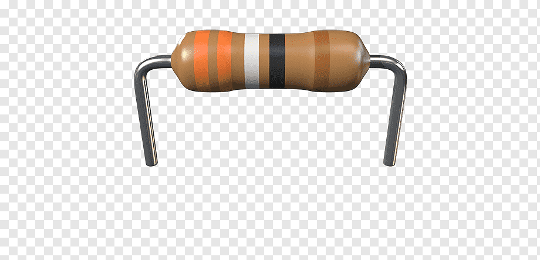
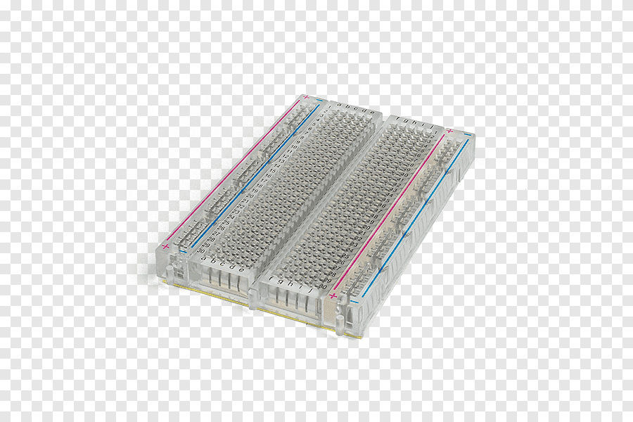

Aprende paso a paso cómo construir un circuito LED básico.
En este tutorial aprenderemos a construir un circuito electrónico sencillo utilizando una batería, una resistencia, un LED y una protoboard.
Comprender cómo circula la corriente eléctrica por un circuito básico y aprender a conectar correctamente sus componentes.
Importante: Antes de conectar el circuito verifica la polaridad de la batería y del LED.
Estos son los elementos necesarios para realizar el proyecto:

Proporciona la energía necesaria para que funcione el circuito.
Cantidad: 1

Es el componente que producirá luz cuando circule corriente.
Cantidad: 1

Limita la corriente que circula por el LED y evita que se queme.
Valor: 220 Ω

Permite realizar conexiones electrónicas sin necesidad de soldar.
Cantidad: 1
| Componente | Cantidad | Función |
|---|---|---|
| LED | 1 | Generar luz |
| Resistencia de 220 Ω | 1 | Limitar la corriente |
| Batería | 1 | Fuente de energía |
| Protoboard | 1 | Realizar conexiones |
| Cables | Varios | Conectar componentes |
Introduce la resistencia de 220 Ω en la protoboard.
Coloca el LED en la protoboard teniendo en cuenta su polaridad.
Conecta el terminal positivo de la batería al circuito mediante la resistencia.
Conecta el terminal negativo de la batería al cátodo del LED.
Si todas las conexiones son correctas, el LED debería encenderse.
Página desarrollada por Juan Esteban Carmona.
Programacion Aplicada 2026